从零开始绕过 DexProtector 加固的 Frida 检测（二）
app版本更新了，如何快速进行处理？如何使用frida-server实现过检测？
（本文由 id：小佳、fyrlove、roysue 共同完成）
这一篇可以看成是《 从零开始绕过 DexProtector 加固的 Frida 检测》的续集：
上一版文章里，我们从 0 开始，一路跟到 DexProtector 的匿名段，把 Frida 的几类检测点（maps / 线程监控 / inline hook / SHA256 校验等）一一打通，在当时的版本上实现了比较完整的一套绕过方案。
大家如果跟着实现了，可以发现，过掉检测后，会提示更新，这也是现实开发/对抗的真实场景：
App 隔三差五发个小版本更新，壳还是 DexProtector，
但 so 结构、偏移、匿名段位置都变了――旧脚本直接崩，
要不要从头再逆一次？
这篇文章要解决的，就是这个“日常但很致命”的问题：
当 app 小版本更新后，怎么在不推倒重来的前提下，
快速把上一版已经验证过的绕过思路迁移过来？
然后，顺着这个场景，我们再往前迈一步，目前都使用了开源模块来完成过检测，这里我们后面会魔改frida-server来完成过检测：
- 自己编译一份 固定版本的 frida 16.5.2
- 在手机上用「魔改版 frida-server」直接替换原版的firda-server，
在 不依赖 Zygisk Frida Gadget 模块 的前提下，通过当前样本的检测
所以整篇文章分成两大部分：
- 第一部分：快速修改更新后的脚本
- 换新样本后，如何利用 dlopen + 指针解引用 + 匿名段 dump，重新找到 DexProtector 的真实执行入口
- 怎么用上一个版本已经踩过的“特征”（比如
C8628052 / 28108052 这些常量、pthread_create 调度点、inline hook 分发函数等），批量迁移偏移，而不是重新“看一遍全图”
- 第二部分：自己编译 frida-server，并用魔改版过检测
- 从零安装 Ubuntu 22.04.5 虚拟机、配置共享文件夹
- 搭建 Frida 16.5.2 的完整编译环境（NDK / Node / 依赖）
- 基于开源项目
ajeossida 固定 Frida 版本为 16.5.2，改名为自定义的 fyrrida，并输出适配 Android arm64 的 server
- 实机上用 魔改后的 frida-server 替换官方版，配合前文脚本，实测通过 DexProtector 检测
为保证结论可复现、可迁移，所有实验都在同一套环境下完成：
- 设备：Nexus 5X
- 系统：LineageOS 21
- Root & 模块：Magisk 29.0.0 + LSPosed
- Frida：Zygisk Frida Gadget 开源模块（https://github.com/sucsand/sucsand）
- Frida 版本：Frida Server 16.5.2
- 魔改frida-server: fyrrida-server
合规声明：
- 文章仅用于安全研究与对抗评估；
- 目的是帮助甲方团队识别加固薄弱点，完善自检和回归流程；
- 不针对任何具体业务做攻击落地；
- 不提供“一键利用第三方应用”的脚本。
适合谁看？
- 已经看过 / 跑过上一篇，基本了解 DexProtector 这一版的检测策略
- 想把自己手里的 frida 从“拿来主义”升级到“可定制、可迭代”的同学
不适合谁？
- 想找一份“一键通杀脚本”直接上线的，这篇不提供
- 完全不熟悉 Android / so / Frida 逆向环境的，建议先把基础环境、工具用法打通，再回来会更顺
阅读顺序建议：
本篇所有操作，都是在上一篇文章的基础上做“版本升级迁移”。如果你还没看过第一篇，建议先看完再回来：
下面从样本更新开始，一步步走一遍：先看旧脚本在新版本上是怎么崩的，再带着这些“已知检测点”，去新版 so 里做定位和迁移。
第一部分：快速修改更新后的脚本（版本升级迁移）
这一部分的目标很简单：在不推倒重来的前提下，把旧脚本迁移到新版本上继续可用。
核心思路是：
先定位“新的真实执行入口”，再用“老版本已知特征”去对齐“新版本偏移”。
1. 更新样本与准备工作
1.1 使用上一篇文章中的完整脚本进行测试
更新后样本：kaiyue610.apks，放在附件和文章结尾。
这里我没有先去看 so，而是直接沿用上一篇已经验证过的完整脚本，先执行一次，看它“死在哪里”。这一步有两个目的：
- 快速验证：旧思路是否整体仍然成立（大概率成立，除非壳版本跨度非常大）
- 给出一个“崩溃点”，方便后面在新 so 里对照定位
端口转发：
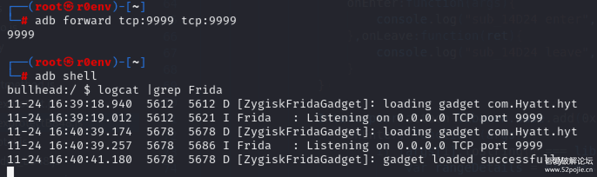
执行结果：
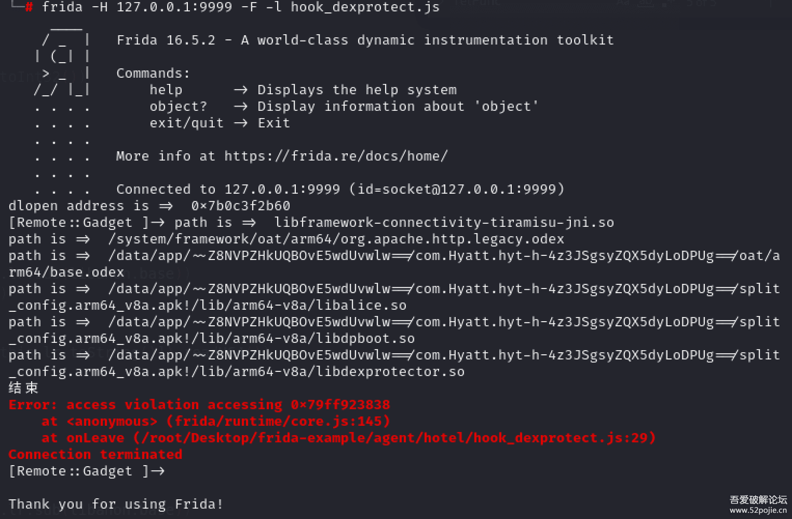
不出意外的崩溃了。从日志可以看到是典型的“地址无效导致崩溃”。从对抗经验上，这往往意味着：
- 整体检测链路还在
- 但关键函数 / 检测逻辑的偏移已经变化，脚本打到了一块错误的内存区域
接下来根据 610 版本的 apk，获取一下新版本的 so，并重新 dump 匿名段上的 so。
1.2 获取新版本的专属 so（libdexprotector.so）
第一步还是老流程：先拿到 DexProtector 自己的壳 so，也就是 libdexprotector.so。
这个so在split_config.arm64_v8a.apk里面，安装包里解压出来有，再给它解压就得到libdexprotector.so
把这个新版本的so用ida打开，可以看到:
jint JNI_OnLoad(JavaVM *vm, void *reserved)
{
int v3;
if ( dword_B840 )
return -dword_B840;
v3 = off_B848(vm, 0);
off_B848 = 0;
if ( v3 )
return -v3;
else
return 65540;
}
这里的指针函数变成了off_B848，而上个版本这里是off_C838。
这一步很关键：
JNI_OnLoad 本身没什么花活，但它帮你给出了“下一步真正执行逻辑”的指针
一旦指针位置变了（off_C838 → off_B848），意味着后面所有“基于旧偏移”的脚本都要跟着调整
1.3 dump内存段上的so
这一步和上一篇完全一样：
利用 __loader_android_dlopen_ext 的 hook，把匿名段里的真正执行代码 dump 出来。
具体执行过程，请参考上一篇文章，这里不再赘述。
从零开始绕过DexProtector加固的Frida检测
这里我们只关心：新版本的匿名段 so 也已经拿到了，接下来要重新找“真实执行入口”。
1.4 用 dlopen + 指针解引用找到真实执行的函数
function hook_dlopen() {
var android_dlopen_ext = Module.findExportByName(null, "__loader_android_dlopen_ext")
Interceptor.attach(android_dlopen_ext, {
onEnter: function (args) {
var pathptr = args[0];
if (pathptr !== undefined && pathptr != null) {
var path = pathptr.readCString();
console.log(path)
if (path.indexOf("libdexprotector.so") !== -1) {
this.match = true
}
}
},
onLeave: function () {
if (this.match) {
let libdexprotector = Process.findModuleByName("libdexprotector.so")
var nativePointer = libdexprotector.base.add(0xB848).readPointer();
var rangeDetails = Process.findRangeByAddress(nativePointer);
// 段开始和结束
console.log(rangeDetails.base)
console.log(rangeDetails.base.add(rangeDetails.size))
// 开始位置
console.log("真实的执行函数 => "+nativePointer.sub(rangeDetails.base))
Thread.sleep(50)
}
}
})
}
hook_dlopen()
执行结果：
/system/framework/oat/arm64/org.apache.http.legacy.odex
/data/app/~~Z8NVPZHkUQBOvE5wdUvwlw==/com.Hyatt.hyt-h-4z3JSgsyZQX5dyLoDPUg==/oat/arm64/base.odex
/data/app/~~Z8NVPZHkUQBOvE5wdUvwlw==/com.Hyatt.hyt-h-4z3JSgsyZQX5dyLoDPUg==/split_config.arm64_v8a.apk!/lib/arm64-v8a/libalice.so
/data/app/~~Z8NVPZHkUQBOvE5wdUvwlw==/com.Hyatt.hyt-h-4z3JSgsyZQX5dyLoDPUg==/split_config.arm64_v8a.apk!/lib/arm64-v8a/libdpboot.so
/data/app/~~Z8NVPZHkUQBOvE5wdUvwlw==/com.Hyatt.hyt-h-4z3JSgsyZQX5dyLoDPUg==/split_config.arm64_v8a.apk!/lib/arm64-v8a/libdexprotector.so
0x75ffc04000
0x75ffc80000
真实的执行函数 => 0x4ec38
这里有几个信息点：
libdexprotector.so 还是正常通过 __loader_android_dlopen_ext 加载
off_B848 指向的地址，仍然落在一个匿名段范围内（0x75ffc04000 ~ 0x75ffc80000）
真正执行逻辑的入口偏移变成了 0x4ec38
小结一下这一节：
- 旧脚本崩溃，让我们确认“检测逻辑还在”；
- 新指针 off_B848 + 匿名段 dump，让我们拿到了新版本的真正起点（0x4ec38）。
- 下面所有迁移工作，都是围绕这个入口展开的。
1.5 使用ida对dump的so进行修复
修复方法和上一篇一样：把 dump 出来的匿名段 so，按 text 段对齐、修复重定位，尽量恢复出一个“可读”的 IDA 工程。
这里是我已经修复之后的，修复手法，请参考上一篇文章。
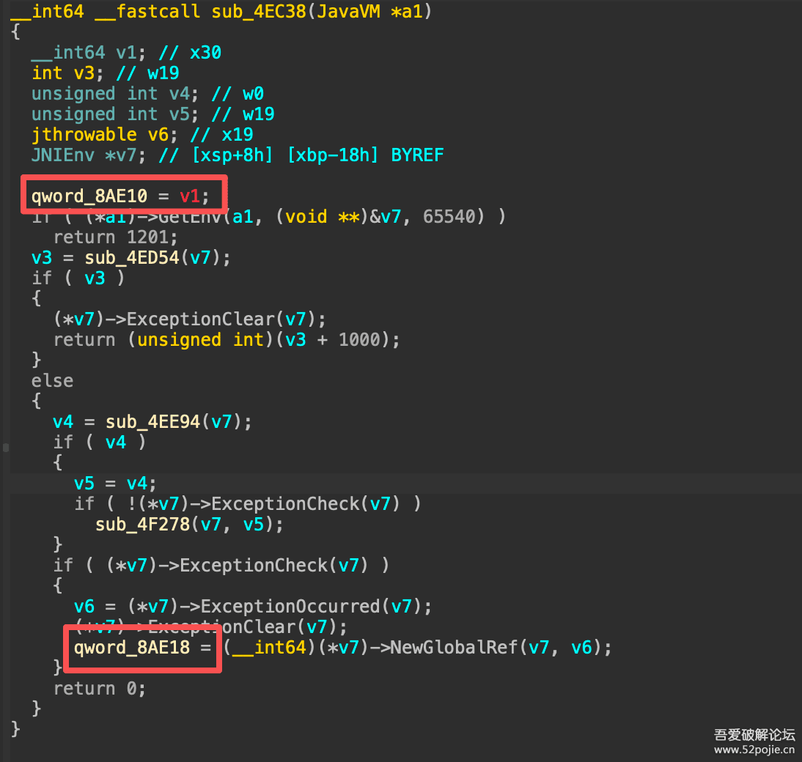
到这里，准备工作就完成了。
剩下的，就是围绕新的入口偏移 0x4ec38，去重新定位各类检测点：pthread_create、inline hook 分发、SHA-256 校验、maps 检测等。
02.思考，针对更新如何进行处理
2.1 根据上次完成的脚本，来进行思考，分析检测特征有哪些
-
特征一、线程创建，线程检测（phtread_create是第一个特征）
这一块是最典型的“监控线程 + 检测循环”逻辑。上一版里，我们直接对几个关键调用点做了 ret：
retFunc(libanon.base.add(0x5A708))
retFunc(libanon.base.add(0x5BE28))
retFunc(libanon.base.add(0x5D1A4))
retFunc(libanon.base.add(0x5D710))
这里本质上是在阻断监控线程的创建，让它根本跑不起来。
-
特征二、inline hook
这里有两类，一类是“看 LR 决定走哪段逻辑”的分发函数：
var hash_crc = {
"0x4f5a4" : "0x8A810",
"0x4f6cc" : "0x8A810",
"0x5c494" : "0x8AB20"
}
Interceptor.attach(libanon.base.add(0x161E8),{
onEnter:function(args){
console.log("sub_161E8 enter",this.context.lr.sub(libanon.base))
this.lr = this.context.lr.sub(libanon.base)
},onLeave:function(ret){
if(hash_crc[this.lr.toString()]){
ret.replace(libanon.base.add(hash_crc[this.lr.toString()]).readU64())
console.log("sub_161E8 leave",ret)
}
}
})
另一类是“利用指针替换”的方式，把原来的校验函数指向我们想要的地址：
Interceptor.attach(libanon.base.add(0x304A8), {
onEnter: function (args) {
//这里是sha256
if (args[1].toString() === libanon.base.toString()) {
var rangeDetails = Process.findRangeByAddress(args[0]);
console.log("onEnter 0x304A8 ",args[0],args[1],args[2],"base ",rangeDetails.base)
args[1] = origin
console.log("[0x304A8] 替换成功")
}
}
})
这两类逻辑，有一个共同点：
它们本身不承担“检测计算”，而是“调度 / 分发 / 接线”，属于非常稳定的结构。
版本更新时，里面被调用的具体函数地址会变，但“整体骨架 + 控制方式”大概率不变。
-
特征三、maps检测
通过上一篇文章的分析，可以知道这个函数返回的结果是790
//hook_maps
Interceptor.attach(libanon.base.add(0x61974),{
onEnter: function(){
this.lr = this.context.lr.sub(libanon.base)
},
onLeave: function(retval){
console.log("0x61974 => ",retval.toInt32()," lr => ",this.lr);
retval.replace(0);
}
})
在ida中定位到0x61974，查看790，按tab，查看汇编，这个W8, #0x316，基本是不会变化的。
ROM:0000000000061C84 MOV W8, #0x316
也就是
C8628052
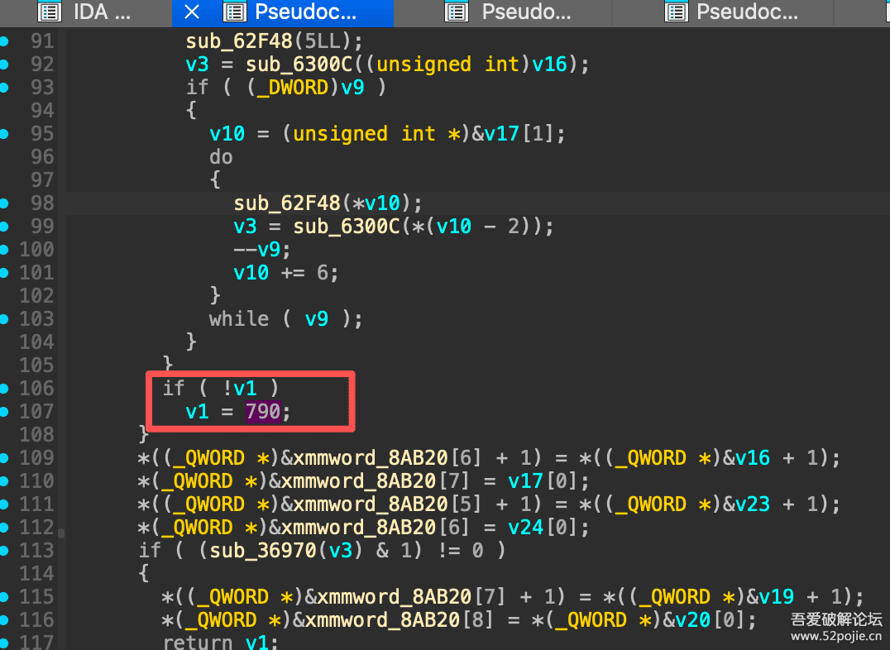
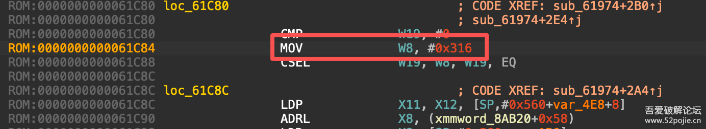
所以，总体上，我们需要处理的检测有这几类：
- 线程创建 / 监控线程（pthread_create）
- inline hook 分发函数（通过 LR 决定后续逻辑）
- SHA-256 / CRC 等校验逻辑（通过指针参数 / 填充来替换）
- maps 检测（通过固定常量快速定位）
接下来就是实战部分：怎么把这些“共性特征”迁移到新版本上。
03.实际操作：基于“入口 + 特征”的偏移迁移
app小版本更新，检测点很大概率是不会发生变化的。所以按思路，拿到新dump下来的so之后，顺序进行分析。
上面已经拿到真实的执行函数 => 0x4ec38
3.1 顺序查找，定位新的inline hook，并修改代码
在ida中打开新的libanon.so，按G，跳转到0x4ec38。
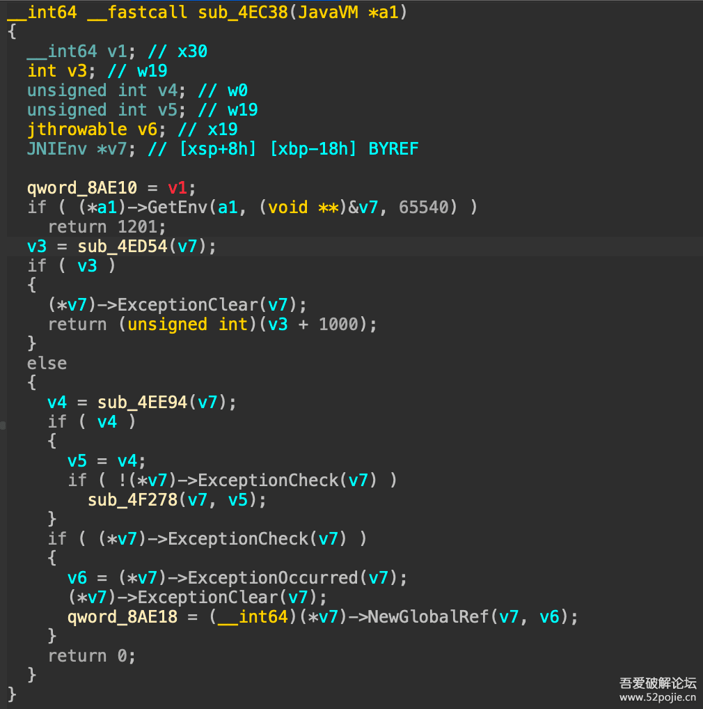
从这里开始，顺藤摸瓜往下点：点击第一个函数sub_4ED54，进去后，结果如下：
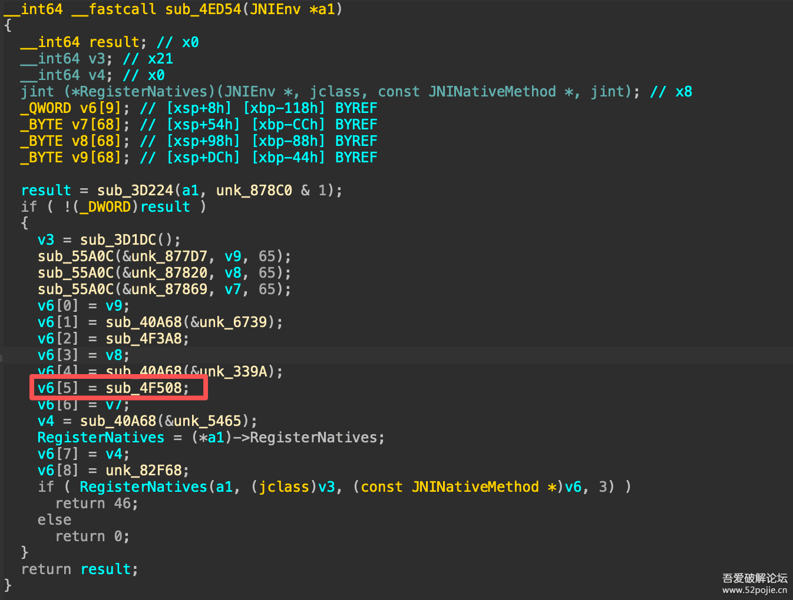
按之前文章分析，可以知道，新的so中，最关键的函数就是sub_4F508了。
进入sub_4F508了之后，顺序进行分析，很快就能找到做inline hook的地方，sub_165F0：
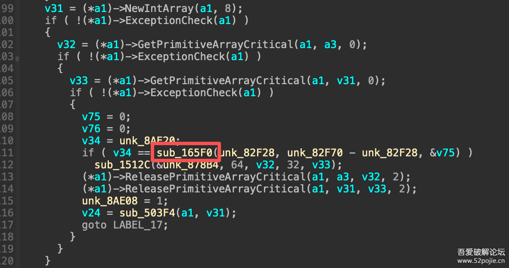
引用查找sub_165F0，找到需要定位的lr，完成后的代码是：
var hash_crc = {
"0x4f858": "0x8AE20",
"0x4f980": "0x8AE20",
"0x53c58": "0x8AF00",
"0x5c8f0": "0x8B140"
}
Interceptor.attach(libanon.base.add(0x165F0),{
onEnter:function(args){
console.log("0x165F0 enter",this.context.lr.sub(libanon.base))
this.lr = this.context.lr.sub(libanon.base)
},onLeave:function(ret){
if(hash_crc[this.lr.toString()]){
ret.replace(libanon.base.add(hash_crc[this.lr.toString()]).readU64())
console.log("0x165F0 leave",ret)
}
}
})
到这里，第一步“顺序查找 + inline hook 迁移”就完成了：
- 老版本中的 sub_161E8 → 新版本中的 sub_165F0
- LR 与目标偏移的映射关系重新整理成了新版的 hash_crc
3.2 快速定位sha256的位置（特征字节法）
使用010editor，ctrl+f，进行搜索
6560045e5040115e
搜索结果，右键复制地址：
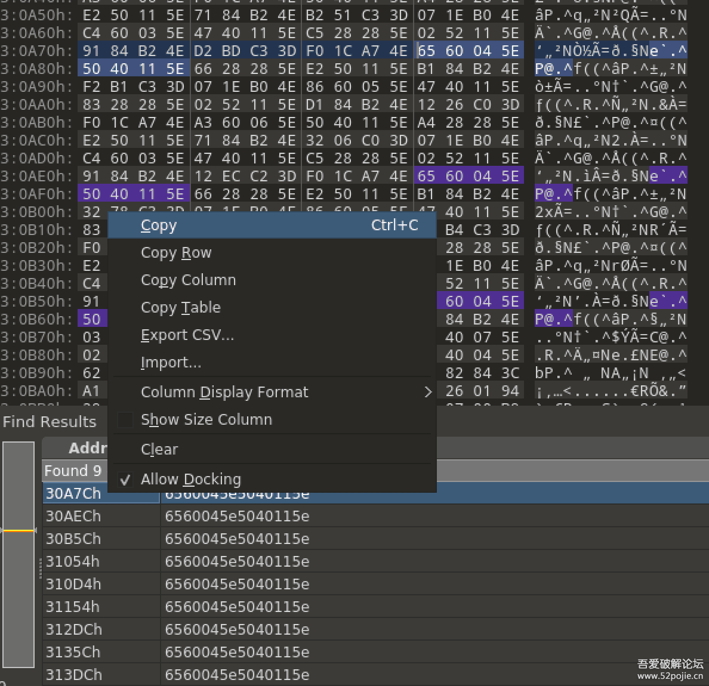
到ida中跳转地址，直接就定位到了sha256的函数，sub_308B0：
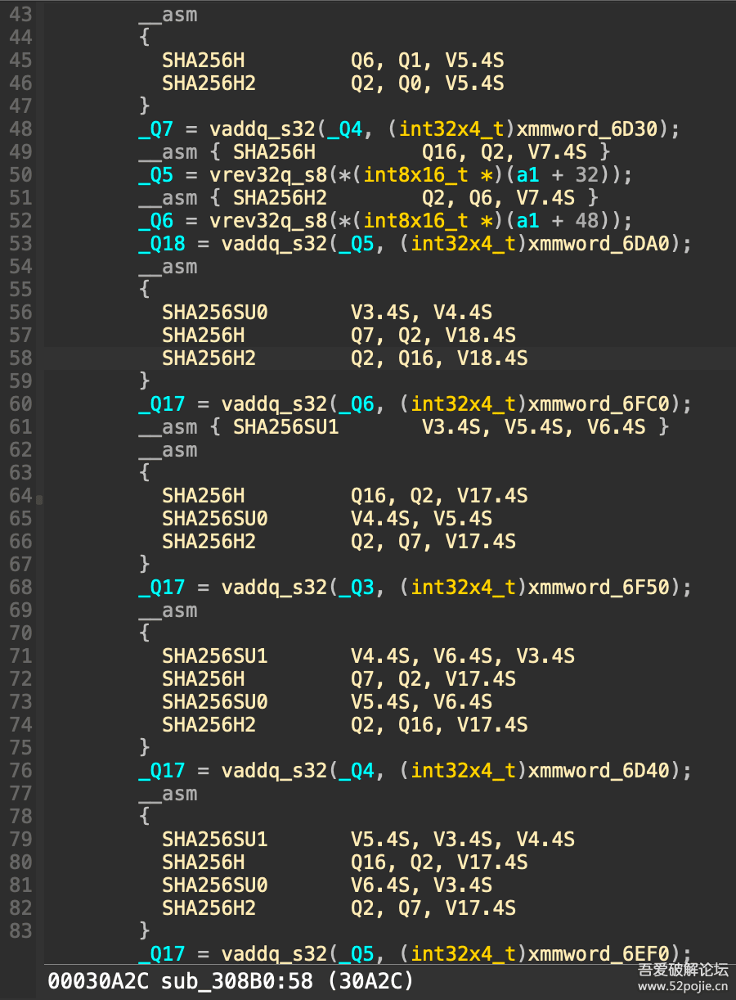
修改之后的代码是：
Interceptor.attach(libanon.base.add(0x308B0), {
onEnter: function (args) {
if (args[1].toString() === libanon.base.toString()) {
var rangeDetails = Process.findRangeByAddress(args[0]);
console.log("onEnter 0x308B0 ",args[0],args[1],args[2],"base ",rangeDetails.base)
args[1] = origin
console.log("[0x308B0] 替换成功")
}
}
})
执行一下脚本，拿到地址是0x7a8b0：
0x165F0 enter 0x4f858
0x165F0 leave 0x832d39a094055b4f
onEnter 0x308B0 0x7fc00018c0 0x79ee96c000 0x7a8b0 base 0x7fbf80b000
[0x308B0] 替换成功
使用0x7a8b0，更新脚本：
var origin
var size=0x7a8b0
这一步完成后，新版的 SHA-256 校验逻辑也已经被“接管”，后续就不会再因为 hash 校验失败而崩溃。
3.3 使用特征常量快速定位新的 maps 检测
使用之前的C8628052，在010editor中进行搜索：
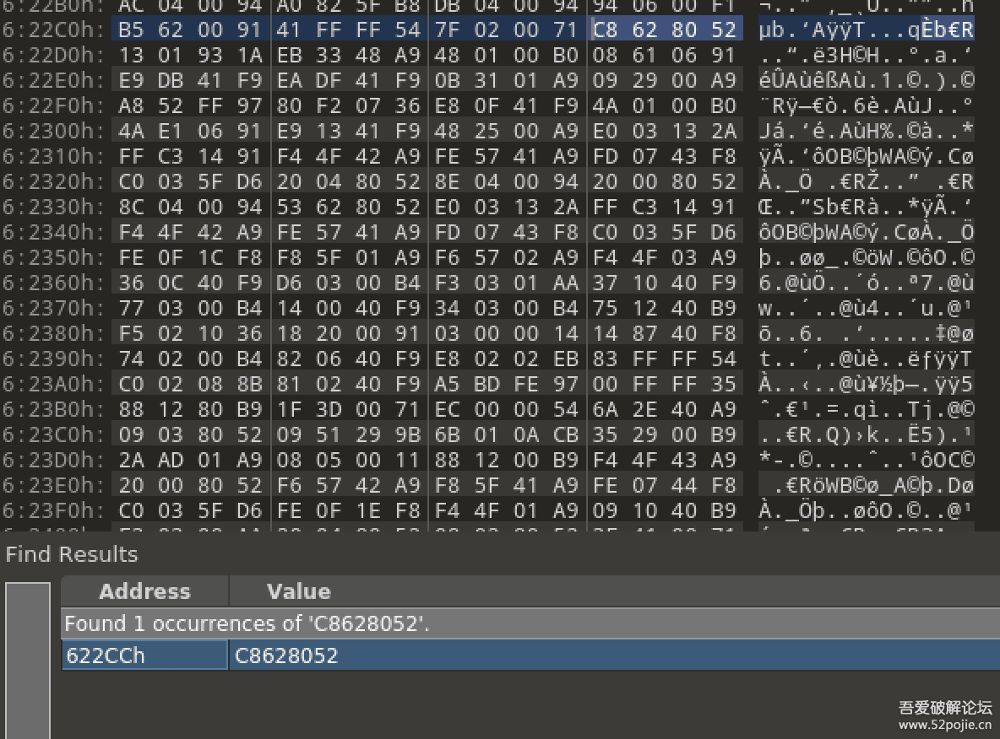
直接就搜索到了，右键复制地址，然后去ida中跳转地址，直接就定位上了，sub_61FBC：
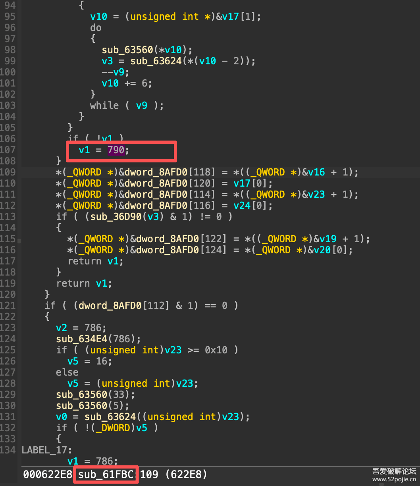
修改之后的代码是：
//hook_maps
Interceptor.attach(libanon.base.add(0x61FBC),{
onEnter: function(){
this.lr = this.context.lr.sub(libanon.base)
},
onLeave: function(retval){
console.log("0x61FBC => ",retval.toInt32()," lr => ",this.lr);
retval.replace(0);
}
})
通过这一步，可以验证两个结论：
- DexProtector 的 maps 检测逻辑整体没有被删除，只是偏移发生了变化
- “固定返回 0x316 / 790” 这种做法，在多版本之间具有很强的可迁移性，非常适合拿来做锚点
3.4 接下来是最后一个，pthread_create监控线程
在010editor中搜索：28108052
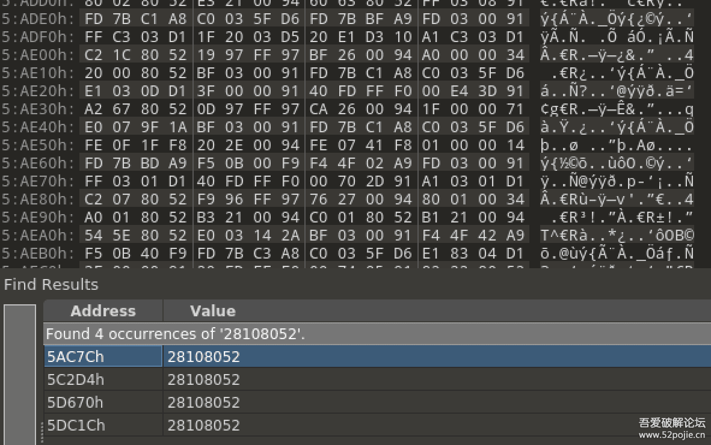
复制地址，到ida跳转地址：

定位到了sub_5AB20，按x查找引用：
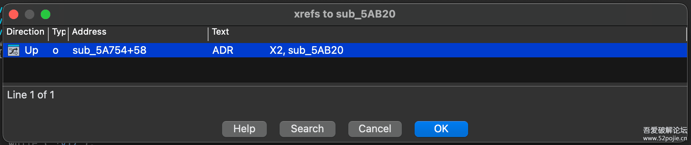
跳转后，找到了pthread_create:
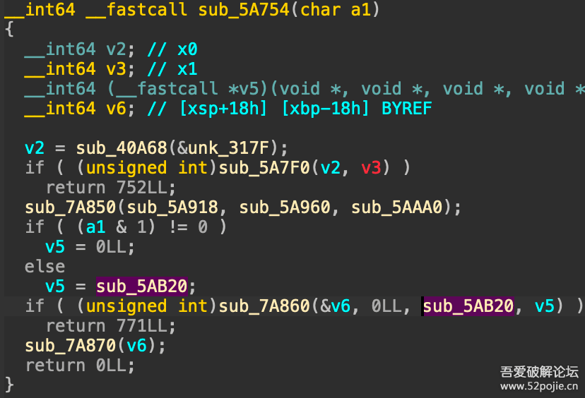
基本上可以确定这个sub_7A860这个函数就是pthread_create了，找它全部调用的地方全部ret掉。
在sub_7A860按x，查找所有引用：
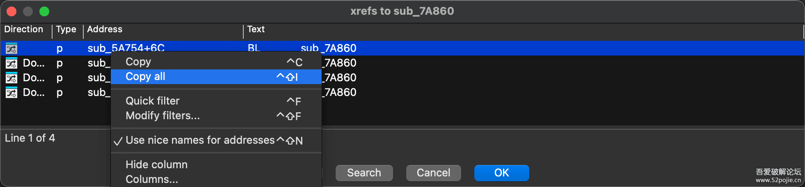
然后修改之前的代码：
retFunc(libanon.base.add(0x5AB20))
retFunc(libanon.base.add(0x5C280))
retFunc(libanon.base.add(0x5D5FC))
retFunc(libanon.base.add(0x5DB68))
到这里，新版本的“监控线程创建”也已经全部封死。
所有检测点的新版本修改完毕
执行新的代码：
frida -H 127.0.0.1:9999 -F -l hook_dexprotectB848.js
执行结果，成功过掉了610版本的检测：
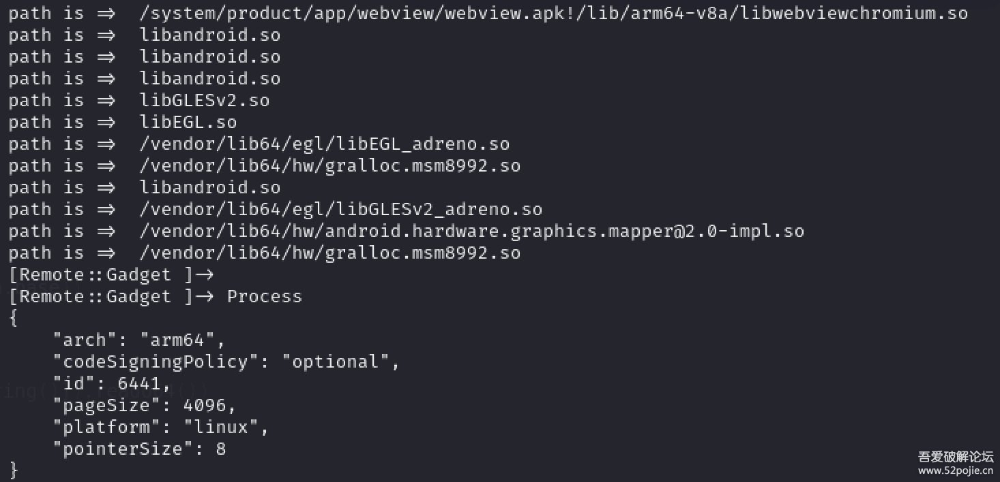
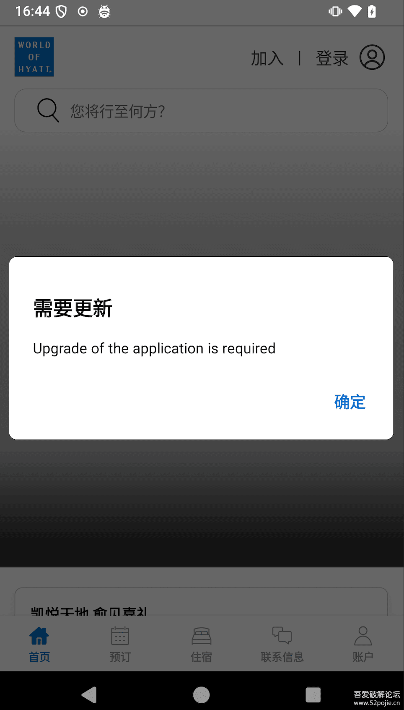
4. 把这一套变成你的“版本升级 SOP”
这一部分，把版本升级后，如果快速处理脚本更新做了一个详细的拆解。可以总结成一套反复可用的流程。
步骤如下：
- 先跑一次旧脚本，看看"死在哪儿"
- 拿到新版本崩溃的so，并定位新的入口
- dump新的匿名段so，锁定新的真实入口
- 根据新的入口在 IDA 里顺序查找，替换 Frida 脚本里的偏移
- 用“特征常量 + 010 Editor”快速锚定新检测点
以上就完成了版本更新后，快速定位修改脚本并过检测的目的。下面，开始详细分析字符串，还原分析过程。
5. 通过打印日志分析字符串
这一节算是一个“预告性质”的内容：
当前样本在绕过后，继续打印了一些字符串日志，可以看出 DexProtector 在做更多维度的环境检测。
[0x40A68] XposedBridge lr => 0x65e28
[0x40A68] xposed/dummy/XResourcesSuperClass lr => 0x65a54
[0x40A68] /proc/self/status lr => 0x5a820
[0x40A68] dalvik/system/VMDebug lr => 0x5d770
[0x40A68] isDebuggerConnected lr => 0x5d7b8
[0x40A68] ()Z lr => 0x5d7d4
[0x40A68] /proc/self/maps lr => 0x3b68c
[0x40A68] libart.so lr => 0x5d8c4
[0x40A68] libriru lr => 0x61648
[0x40A68] .magisk lr => 0x61660
[0x40A68] zygisk lr => 0x616b8
在输出中可以看到有zygisk字符串，选zygisk，在ida中去查看一下，
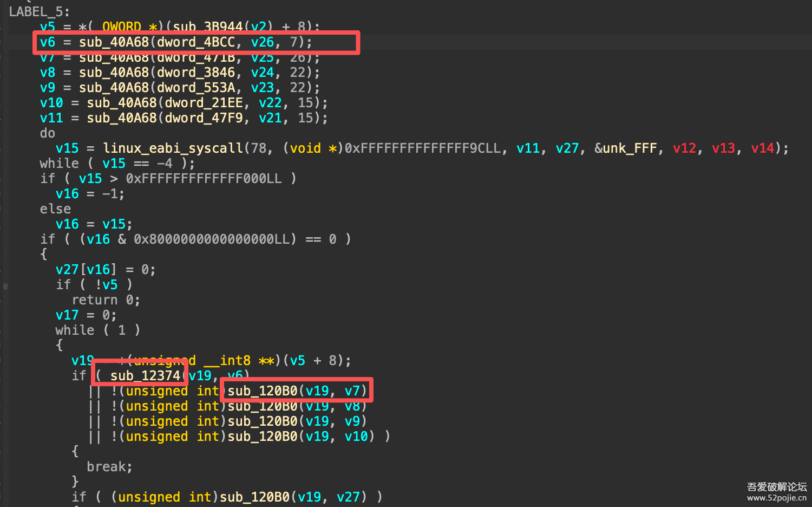
一般来说，有解密就有比较。分别查看sub_12374和sub_120B0之后，可以知道sub_120B0就是用来做比较的:
__int64 __fastcall sub_120B0(unsigned __int8 *a1, unsigned __int8 *a2)
{
int v2; // w9
unsigned int v3; // w8
while ( 1 )
{
v2 = *a1;
v3 = v2 - *a2;
if ( v3 )
break;
++a2;
++a1;
if ( !v2 )
return 0;
}
return v3;
}
可以hook看一下：
Interceptor.attach(libanon.base.add(0x120B0),{
onEnter: function(args){
this.lr = this.context.lr.sub(libanon.base)
console.log("0x120B0 => "," lr => ",this.lr,args[0].readCString(),args[1].readCString());
},
onLeave: function(retval){
}
})
运行结果，多输出了很多的字符串：
0x120B0 => lr => 0xa6f9560c blog.so blog.so
0x120B0 => lr => 0xa6f9560c log.so log.so
0x120B0 => lr => 0xa6f9560c og.so og.so
0x120B0 => lr => 0xa6f9560c g.so g.so
0x120B0 => lr => 0xa6f9560c .so .so
0x120B0 => lr => 0xa6f9560c so so
0x120B0 => lr => 0xa6f9560c o o
0x120B0 => lr => 0xa6f9560c
0x120B0 => lr => 0x3abfc __android_log_btwrite __android_log_btwrite
0x120B0 => lr => 0xa6f9560c _android_log_btwrite _android_log_btwrite
0x120B0 => lr => 0xa6f9560c android_log_btwrite android_log_btwrite
0x120B0 => lr => 0xa6f9560c ndroid_log_btwrite ndroid_log_btwrite
0x120B0 => lr => 0xa6f9560c droid_log_btwrite droid_log_btwrite
0x120B0 => lr => 0xa6f9560c roid_log_btwrite roid_log_btwrite
0x120B0 => lr => 0xa6f9560c oid_log_btwrite oid_log_btwrite
0x120B0 => lr => 0xa6f9560c id_log_btwrite id_log_btwrite
0x120B0 => lr => 0xa6f9560c d_log_btwrite d_log_btwrite
0x120B0 => lr => 0xa6f9560c _log_btwrite _log_btwrite
0x120B0 => lr => 0xa6f9560c log_btwrite log_btwrite
0x120B0 => lr => 0xa6f9560c og_btwrite og_btwrite
0x120B0 => lr => 0xa6f9560c g_btwrite g_btwrite
0x120B0 => lr => 0xa6f9560c _btwrite _btwrite
0x120B0 => lr => 0xa6f9560c btwrite btwrite
0x120B0 => lr => 0xa6f9560c twrite twrite
0x120B0 => lr => 0xa6f9560c write write
0x120B0 => lr => 0xa6f9560c rite rite
0x120B0 => lr => 0xa6f9560c ite ite
0x120B0 => lr => 0xa6f9560c te te
0x120B0 => lr => 0xa6f9560c e e
0x120B0 => lr => 0xa6f9560c
hook sub_12374
Interceptor.attach(libanon.base.add(0x12374),{
onEnter: function(args){
this.lr = this.context.lr.sub(libanon.base)
console.log("0x12374 => "," lr => ",this.lr,args[0].readCString(),args[1].readCString());
},
onLeave: function(retval){
}
})
运行结果，又多了很多的字符串输出：
这里只截取了很小的一部分
0x12374 => lr => 0x65800 451 447 259:9 / / ro,relatime master:1 - ext4 /dev/block/mmcblk0p41 ro,seclabel,inode_readahead_blks=8
492 451 0:12 / /dev rw,nosuid,relatime master:2 - tmpfs tmpfs rw,seclabel,size=1428040k,nr_inodes=357010,mode=755
493 492 0:9 / /dev/pts rw,relatime master:3 - devpts devpts rw,seclabel,mode=600
494 492 0:20 / /dev/cpuctl rw,nosuid,nodev,noexec,relatime master:17 - cgroup none rw,cpu
495 492 0:21 / /dev/cpuset rw,nosuid,nodev,noexec,relatime master:18 - cgroup none rw,cpuset,noprefix,release_agent=/sbin/cpuset_release_agent
496 492 0:22 / /dev/memcg rw,nosuid,nodev,noexec,relatime master:19 - cgroup none rw,memory
497 492 0:26 / /dev/usb-ffs/adb rw,noatime master:32 - functionfs adb rw
498 451 0:3 / /proc rw,relatime master:4 - proc proc rw,gid=3009,hidepid=2
499 451 0:14 / /sys rw,relatime master:5 - sysfs sysfs rw,seclabel
500 499 0:11 / /sys/fs/selinux rw,relatime master:6 - selinuxfs selinuxfs rw
538 499 0:5 / /sys/kernel/debug rw,relatime master:24 - debugfs debugfs rw,seclabel
539 499 0:24 / /sys/fs/fuse/connections rw,relatime master:26 - fusectl none rw
540 499 0:25 / /sys/fs/pstore rw,nosuid,nodev,noexec,relatime master:27 - pstore pstore rw,seclabel
541 451 0:15 / /mnt rw,nosuid,nodev,noexec,relatime master:7 - tmpfs tmpfs rw,seclabel,size=1428040k,nr_inodes=357010,mode=755,gid=1000
542 541 0:15 /user /mnt/installer rw,nosuid,nodev,noexec,relatime master:14 - tmpfs tmpfs rw,seclabel,size=1428040k,nr_inodes=357010,mode=755,gid=1000
543 542 0:86 / /mnt/installer/0/emulated rw,nosuid,nodev,noexec,noatime master:260 - fuse /dev/fuse rw,lazytime,user_id=0,group_id=0,allow_other
544 543 0:85 /0/Android/data /mnt/installer/0/emulated/0/Android/data rw,nosuid,nodev,noexec,noatime master:263 - sdcardfs /data/media rw,fsuid=1023,fsgid=1023,gid=1015,multiuser,mask=6,derive_gid,default_normal,unshared_obb
545 543 0:85 /0/Android/data /mnt/installer/0/emulated/0/Android/data rw,nosuid,nodev,noexec,noatime master:263 - sdcardfs /data/media rw,fsuid=1023,fsgid=1023,gid=1015,multiuser,mask=6,derive_gid,default_normal,unshared_obb
546 543 0:85 /0/Android/obb /mnt/installer/0/emulated/0/Android/obb rw,nosuid,nodev,noexec,noatime master:251 - sdcardfs /data/media rw,fsuid=1023,fsgid=1023,gid=1015,multiuser,mask=6,derive_gid,default_normal,unshared_obb
547 543 0:85 /0/Android/obb /mnt/installer/0/emulated/0/Android/obb rw,nosuid,nodev,noexec,noatime master:251 - sdcardfs /data/media rw,fsuid=1023,fsgid=1023,gid=9997,multiuser,mask=7,derive_gid,default_normal,unshared_obb
关于字符串更多的分析，以后在深入分析。不是今天的目的。
接下来，进入第二部分：从环境本身下手，魔改一个属于自己的 frida-server
第二部分：使用编译 frida-server 过检测（自定义 fyrrida）
使用魔改后的frida-server，过掉检测，告别Zygisk Frida Gadget 开源模块
下面的过程分为两步：
在 Ubuntu 22.04.5 上，从 0 到 1 编译官方 Frida 16.5.2
在此基础上，用 ajeossida 进行魔改，生成自己的 fyrrida server
在 Ubuntu 22.04.5 上编译 Frida 16.5.2：从系统安装到环境配置全流程
目标：
- 使用
ubuntu-22.04.5-desktop-amd64.iso 安装一台全新的 Ubuntu 桌面系统
- 在虚拟机中配置「共享文件夹」方便和宿主机互传文件
- 搭建 Frida 16.5.2 所需的构建环境，并从源码编译
说明：
- 以 Ubuntu 22.04.5 Desktop 64-bit 为例
- 虚拟机平台 VMware
一、准备工作
1. 下载 Ubuntu 22.04.5 ISO
-
正常安装Ubuntu，阿里云ubuntu-22.04.5-desktop-amd64.iso
https://mirrors.aliyun.com/ubuntu-releases/22.04.4
2. 新建虚拟机
-
这里以 VMware 为例：
-
新建虚拟机 → 选择「稍后安装操作系统」或直接选择 ISO。
-
客户机操作系统选择：
类型：Linux
版本：Ubuntu 64-bit
-
分配资源（推荐）：
CPU：2 核以上
内存：4 GB 起步，建议 8 GB
磁盘：60 GB 或以上，单文件虚拟磁盘
-
在虚拟机设置中，将 ubuntu-22.04.5-desktop-amd64.iso 挂载为 CD/DVD。
3. 搭建Ubuntu开发环境
创建共享文件夹
右键虚拟机 -> 设置 -> 共享文件夹启动 -> 选择文件夹确认

右键打开终端执行
sudo /usr/bin/vmhgfs-fuse .host:/ /mnt/hgfs -o allow_other -o uid=0 -o gid=0 -o umask=022
如果没有/mnt/hgfs创建一个目录，这个时候不是永久的
修改fstab文件
sudo chmod 777 /etc/fstab
最后增加一行(如果使用vim要sudo vim)
.host:/ /mnt/hgfs fuse.vmhgfs-fuse allow_other,uid=0,gid=0,umask=022 0 0
ln把frida文件夹创建一个链接放到桌面上
ln -s /mnt/hgfs/gx ~/Desktop/
这个时候桌面出现frida，它在右下角
更新包(这些打开终端直接执行就可以，简单)
sudo apt update
安装gcc编译器相关的
sudo apt install build-essential
安装git，vim
sudo apt install git
sudo apt install vim
sudo apt install curl
安装nvm(用来安装node的)
curl -o- https://raw.githubusercontent.com/nvm-sh/nvm/v0.39.4/install.sh | bash
查看node安装版本(node 20.10最好)
nvm ls-remote
安装
nvm install 20.10.0
安装配置ndk开发环境
搜索ndk下载，下载ndk25版本的，可以window下载放到共享文件夹里面去。
https://dl.google.com/android/repository/android-ndk-r25c-linux.zip
创建value目录在Home里面
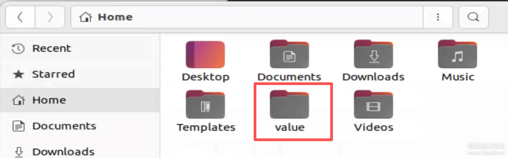
创建好了之后解压在home里面，设置~/.bashrc环境变量~代指home
vim ~/.bashrc
下面这两行加到文件最后的位置去，这两个是环境变量，其中PATH就是我们执行bin相关的位置
export ANDROID_NDK_ROOT=~/value/android-ndk-r25c
export PATH=$PATH:$ANDROID_NDK_ROOT
ANDROID_NDK_ROOT是frida需要的
然后执行更新环境变量
source ~/.bashrc
4. 编译官方 frida-core（为后续魔改打基础）
这一小节的目标不是“立刻产出可躲检测版本”，而是：
先保证你在本机能 从源码 → 原版 frida-server 的整个过程跑通，
后面再在这个基础上去做魔改，会轻松很多。
在文件夹里面下载frida-core源码，我只需要frida-server，只拉取frida-core就行了，不用拉取整个frida
git clone https://github.com/frida/frida-core.git
cd进去frida-core文件夹，执行加载子模块
git submodule update --init --recursive
配置（我这里使用android-arm64，是因为我的手机是arm64,）
可以选择：["android-arm64", "android-arm", "android-x86_64", "android-x86"]
./configure --host=android-arm64
这样就算是成功了：
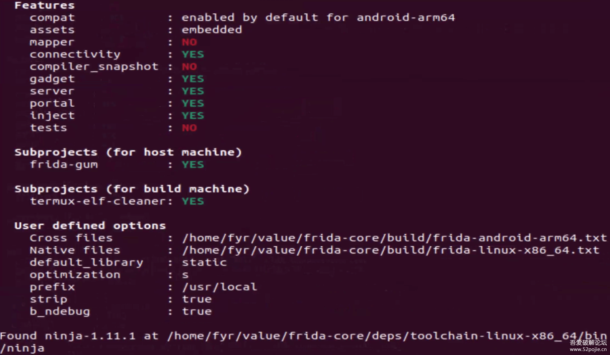
使用 make 编译，注意arm64的个数是285
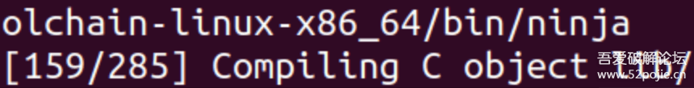
make
后面要魔改frida，这里必须要先编译一次。
重新编译直接把build全部删掉就可以
如果后面编译不了，删除deps目录，删除build目录
二. 使用 ajeossida 魔改生成固定版本的 frida（fyrrida）
使用了开源库ajeossida进行编译
不想要自己编译的，可以在开源库的release里面去下载成品，不用关心后面的内容。
1. 在 Ubuntu 22.04 上打造「fyrrida」――基于 frida 16.5.2 的自定义隐藏版本
前面我们已经在 Ubuntu 22.04.5 上完成了 Frida 16.5.2 的基础编译环境。
在此基础上，使用开源库魔改编译一个自己的frida-server：
- 基于 Frida 16.5.2
- 使用第三方脚本（如
hackcatml/ajeossida）
- 自动改名 & 去掉常见 Frida 特征
- 编译出自己的「定制版 Frida」，这里命名为：fyrrida
⚠️ 说明
- 本节重点在于“改名 + 去特征 + 固定版本 16.5.2”的流程思路。
- 代码片段可根据本地真实路径微调。
- 本节默认你已经完成前文「搭建 Frida 16.5.2 的编译环境」。
2. 整体思路可以概括为三步：
-
准备构建脚本仓库
使用 ajeossida 项目，对 Frida 做一层“包装”：统一改名、注释掉一些经典 hook 点、修改线程名等。
-
强制使用 Frida 16.5.2 源码 + 自定义名字 fyrrida
- 修改脚本的
git_clone_repo()：clone 时直接 checkout 16.5.2 tag。
- 把默认的
CUSTOM_NAME = "ajeossida" 改为 CUSTOM_NAME = "fyrrida"。
-
执行构建脚本，生成 fyrrida server / gadget
- 以 Android 架构为例生成：
fyrrida-server-16.5.2-android-arm64、fyrrida-gadget-16.5.2-android-arm64.so 等。
- 在手机上用
fyrrida-server-16.5.2-android-arm64 替代原版 frida-server。
3. 获取构建脚本仓库
在 Ubuntu 里：
cd /home/fyr/value
git clone https://github.com/hackcatml/ajeossida.git
cd ajeossida
完成后的目录结构是：
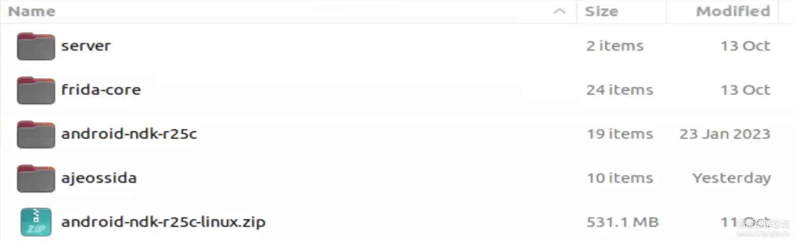
/home/fyr/value
4. 修改代码，指定要编辑的frida版本：
- cd /home/fyr/value/ajeossida
找到main_ubuntu_android.py修改以下代码
修改代码，指定要编辑的frida版本：
#原代码：
CUSTOM_NAME = "ajeossida"
def git_clone_repo():
repo_url = "https://github.com/frida/frida.git"
destination_dir = os.path.join(os.getcwd(), CUSTOM_NAME)
print(f"\n Cloning repository {repo_url} to {destination_dir}...")
run_command(f"git clone --recurse-submodules {repo_url} {destination_dir}")
#修改后：
CUSTOM_NAME = "fyrrida"
def git_clone_repo():
repo_url = "https://github.com/frida/frida.git"
destination_dir = os.path.join(os.getcwd(), CUSTOM_NAME)
tag = "16.5.2"
print(f"\n Cloning repository {repo_url} (tag {tag}) to {destination_dir}...")
# --branch 指定 tag/分支，--depth 1 只拉这一版，速度快很多
run_command(
f"git clone --recurse-submodules --branch {tag} --depth 1 {repo_url} {destination_dir}"
)
return
修改代码后指定拉取的是16.5.2的版本，如果不修改的话，原代码会拉取最新的frida版本进行编译。
开始编译：
python3 main_ubuntu_android.py
编译成功：
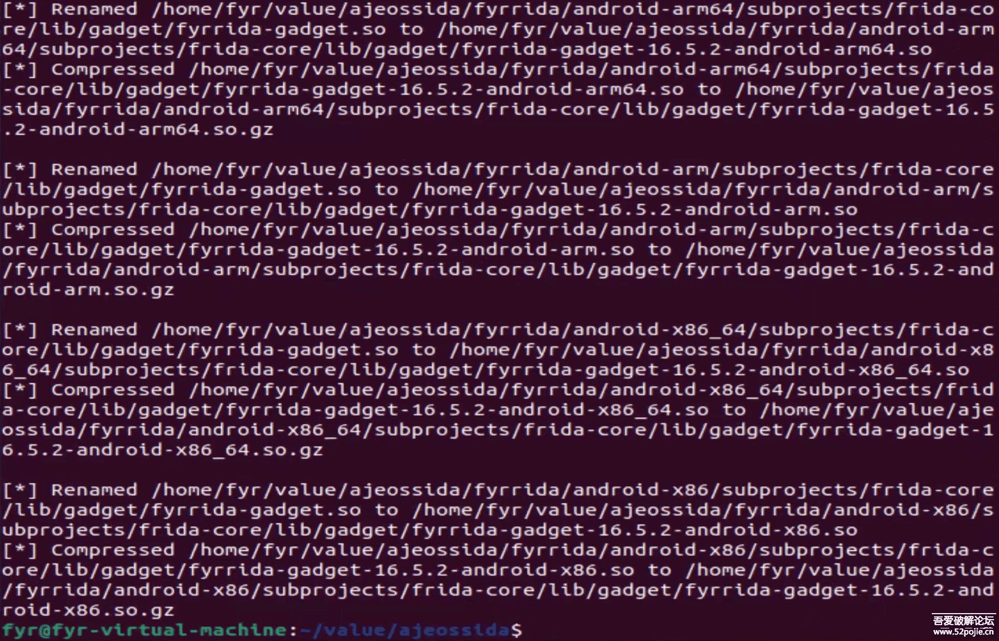
生成的文件，在assets目录下：
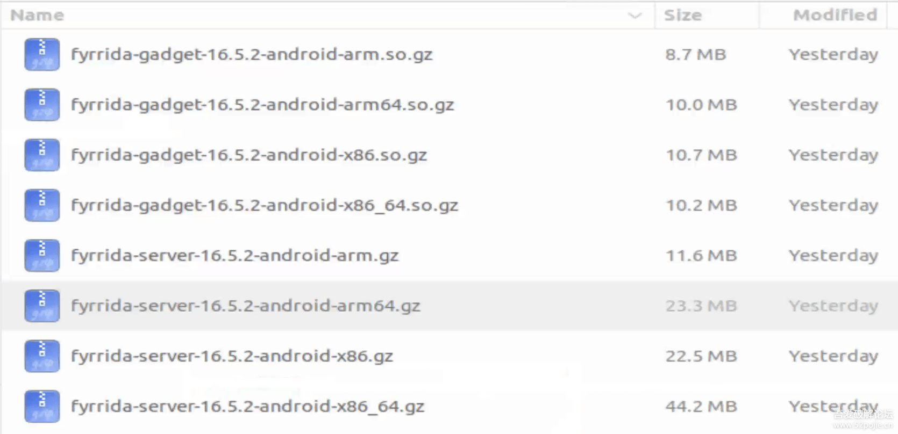
5. 使用编译好的arm64版本，过检测
-
解压fyrrida-server-16.5.2-android-arm64.gz，然后推送到手机
adb push frida-server-16.3.3-android-arm64 /data/local/tmp
-
给权限
adb shell
su
cd /data/local/tmp
chmod 777 frida-server-16.3.3-android-arm64
-
启动frida-server
./frida-server-16.3.3-android-arm64 -l 0.0.0.0:14725
-
端口转发
adb forward tcp:14725 tcp:14725
-
执行脚本
frida -H 127.0.0.1:14725 -f com.Hyatt.hyt -l hook_dexprotectB848.js
结果，使用魔改的frida-server，脱离Zygisk Frida Gadget 开源模块。也实现了过检测：
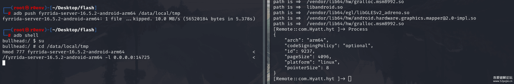
可以看到：
在不依赖 Zygisk Frida Gadget 模块的前提下
仅使用 魔改后的 fyrrida-server + 迁移后的脚本
同样可以通过当前样本的 DexProtector 检测
这一点非常重要，让环境不再捆死在某个模块 / 某个框架上，
而是完全掌握在你自己的手里。
把“一次绕过”变成“长期战斗力”
其实这篇文章做的事，就两件：
- 第一部分，把「版本升级」这件烦心事，拆成了一套能反复照抄的 SOP：入口怎么重找、检测点怎么迁移、特征常量怎么复用；
- 第二部分，把「环境被盯上」这件隐患，交代成了一条从 Ubuntu 装机、Frida 编译到魔改 server 的完整流水线。
前者解决的是效率问题：下次 app 再发 6.1.1、6.1.2，你不用一遍遍从 JNI_OnLoad 开始重新看，只要按流程把几个关键偏移和特征重新对齐；
后者解决的是生存问题：哪怕 Zygisk Frida Gadget 被完全针对，你也可以随时从自己的构建环境里，再产一份新版“fyrrida”扔到手机上继续干活。
如果你已经跟着跑通了一遍，建议现在就做两件小事：
- 把这套 “版本迁移 SOP” + “魔改 Frida 流水线”，整理到自己项目/笔记里，当成固定模板；
- 把脚本、IDA 工程、010 编辑器特征、编译脚本，按 app / 版本号丢进一个私有仓库，后面每次升级就只是「改几行偏移 + 换一版 server」的体力活。
安全对抗本身没有"稳定"一说，DexProtector 也不会因为这一篇文章就“被通杀”。
但只要你的方法论是可复用的、环境是自己可控的，每一次小版本更新、每一次新样本，都会变成你工具箱里多长出来的一颗螺丝钉。
(本文内容由id:小佳、fyrlove、roysue 共同完成，属于小佳的系列体系课里的一部分，APK版本是半年前的不影响最新课程)


 收藏
收藏 免费评分
免费评分 淘帖
淘帖 有用
有用 分享到朋友圈
分享到朋友圈